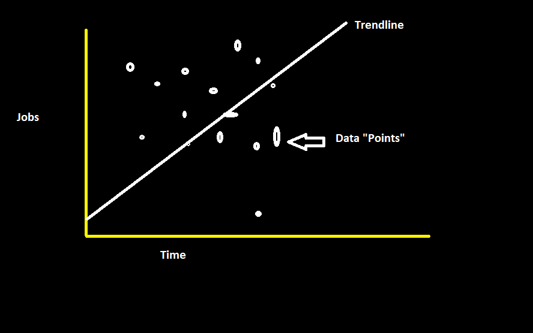
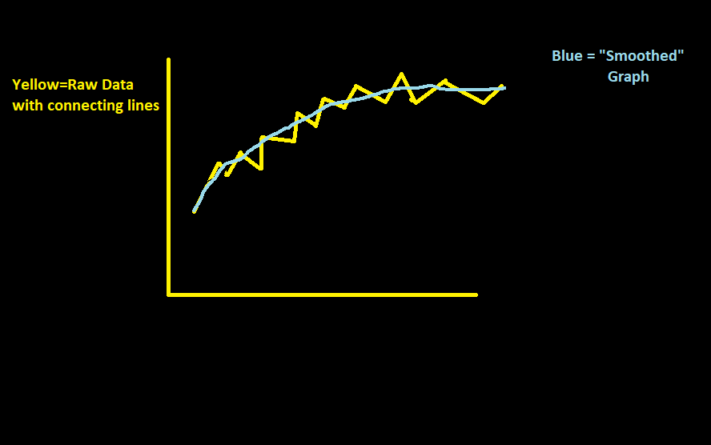

In chapter 7 Cairo mainly talked about the different ways in which data can be presented visually (distribution) and the factors which affect the appearance of these distributions. A big chunk of these distributions were histograms like the one seen below:

This is a histogram for a "normal" distribution; meaning, the data is symmetric as shown and the level is perfectly centred.
In chapter 8, however, Cairo discusses how different techniques are used commonly by govts and other organizations to portray a story that might be untrue using data visualizations. And so, the focus was mainly on how to disect and better understand such visualizations and to teach us some tools which can help achieve this objective. The visualizations shown in chapter 8 were mainly line graphs.
Since raw data is hard to visualize and at times can be overwhelming and too chaotic to directly tell a story, certain tools/techniques are used to visualize the data and tell these stories so we can easily pick up on them. Whether these stories are true or not, is an entirely different question.
Trend lines are just Lines we conjecture between data points/trends to show a general direction of the direction where the data is headed. For example: are the jobs increasing or decreasing? the slope of a trendline between several data points could show us just that, as show below:
 Please forgive my amateur drawing skills.
Note: The figures aren't drawn to scale
One disadvantage of having trendlines would be that it is greatly affected by outliers and doesn't often tell the entire story in terms of what exactly each data point represents.
Smooth Graphs are basically randomness-adjusted graph which negate the disordered small peaks and valleys in a general trend and gives us a smooth line as is self-explanatory. an example of this can be seen below:
A disadvantage to this technique even though it shows data trend more clearly, is that we lose some information with it that comes from the randomness.
Seasonal Subseries Charts are typically used with time, for example with seasons, and visualizes important pieces of informations sepparately. It can show us The average of data for a year and each month in a year sepperately, and also show the general data line for each month at the same time! However, this sort of chart cannot be used to show trends and is only used for cyclic datas like seasonal temperatures etc.
The Logarithmic Scale is often used to graph data that increases exponentially. We need to use such plots in these cases because the data rises slower in the start and much faster as we go along the X-axis, making it harder to notice the changes in the start unless we make the data axis more "uniform" through transformation. So, in a way, The Logarithmic scale is basically a transformation of the axis, and as a consequence of that, the appearance of tha data changes to help us visualize drastic and smaller absolute changes at the same time. An example of exponential data visualized in a log plot would look like this:

Log plot cannot be of much use if the data isn't exponential or isnt rapidly increasing in rate, so it is very case-specific. It also difficult to analyze for a person who isn't familiar with Logarithmic Plots and such plots cannot plot negative and positive values at the same time.